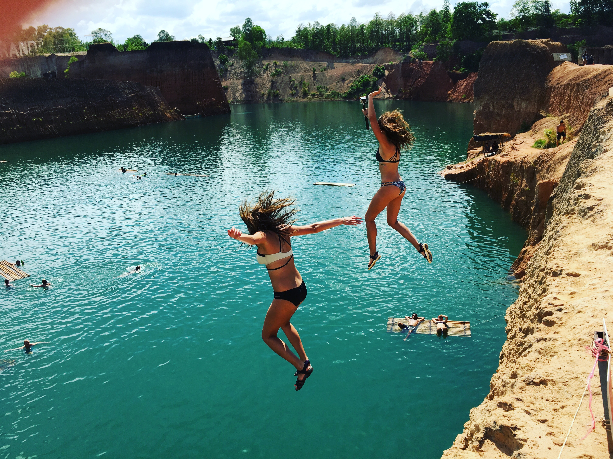

Photography Portfolio
夜静春山空

壹 / 捌
Serenity
夜色如水，万籁归寂。

贰 / 捌
Presence
光影即临，瞬息永恒。

叁 / 捌
Trace
线过留痕，痕即永恒。

肆 / 捌
Shimmer
霓虹闪烁，城市不眠。

伍 / 捌
Structure
线条交错，几何之美。

陆 / 捌
Corner
一隅静谧，光影温柔。

柒 / 捌
Dust
人间烟火，尘世浮华。

捌 / 捌
Ripple
波澜不惊，深流无声。